TravelLink AI 是一套臺東旅遊行程規劃系統，提供網頁版與 Android App 雙平台，支援多人即時共編。使用者輸入日期、人數與旅遊風格後，AI 從 453 筆在地景點挑選候選景點，再由程式依真實車程與營業時間排出可執行的行程；部署於 AMD 算力的 gpt-oss-120b 代理人負責一日遊生成，並在旅途中主動因應下雨、停航與延誤。行程會被畫成互動式地圖，旅程結束後自動產生回顧短片與 IG 九宮格。
臺東南北狹長、景點分散、大眾運輸班次少，前往綠島、蘭嶼還要配合船班與海象，行程很容易「紙上可行、實際走不完」。
直接讓 AI 排行程，會出現不存在的景點與沒開門的時段；而一般行程表只有文字，旅途結束後也很少留下能分享的紀錄。
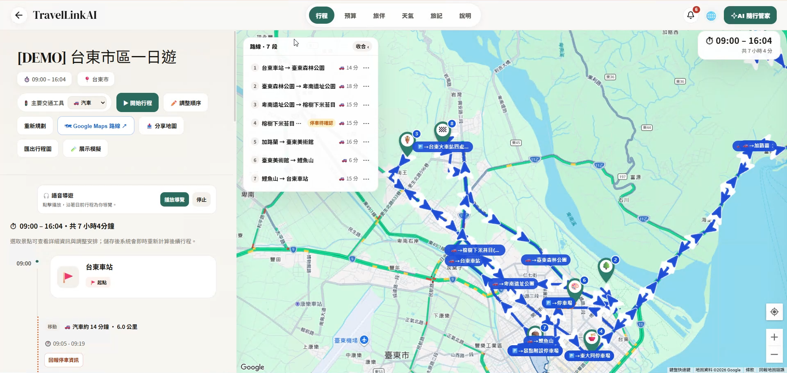
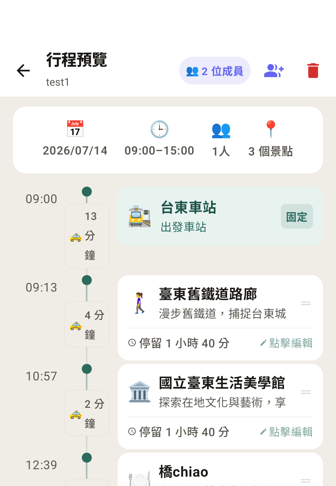
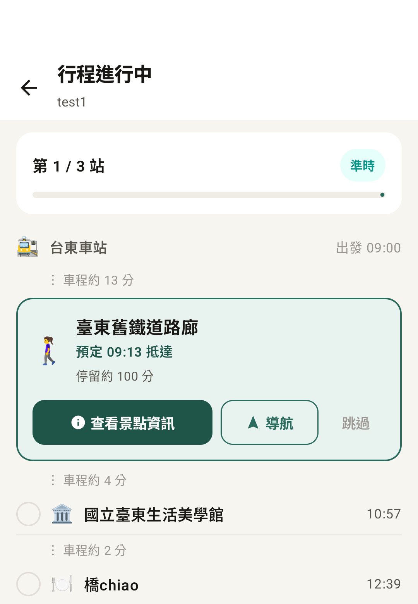
出發後，App 用時間軸帶著旅伴一站一站走：每一站顯示車程、停留時間與預計抵達，到站後可以打卡、導航或跳過。
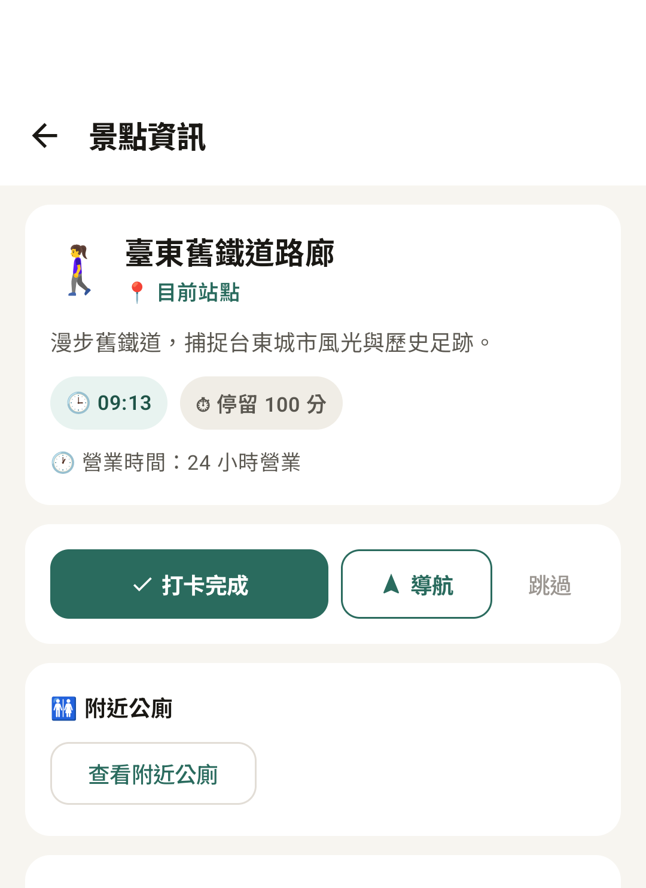
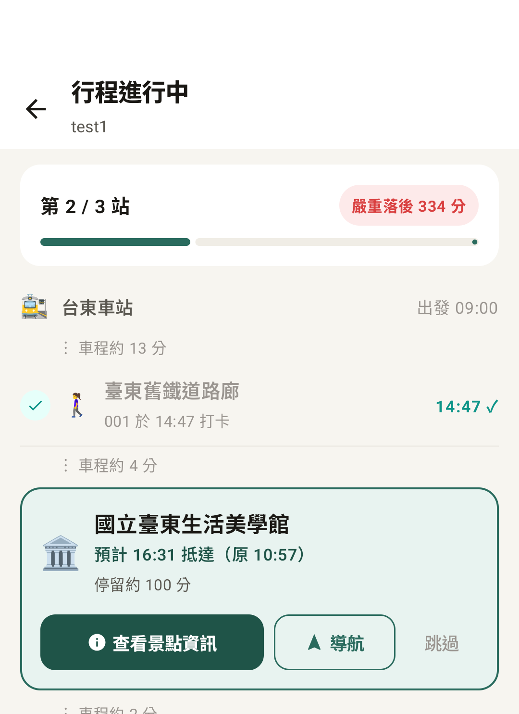
行程排好後，系統把整趟路線畫成一張手繪風格的俯瞰地圖。地圖不只是裝飾：每一站都能點選，行程進行中還會顯示目前走到哪裡。
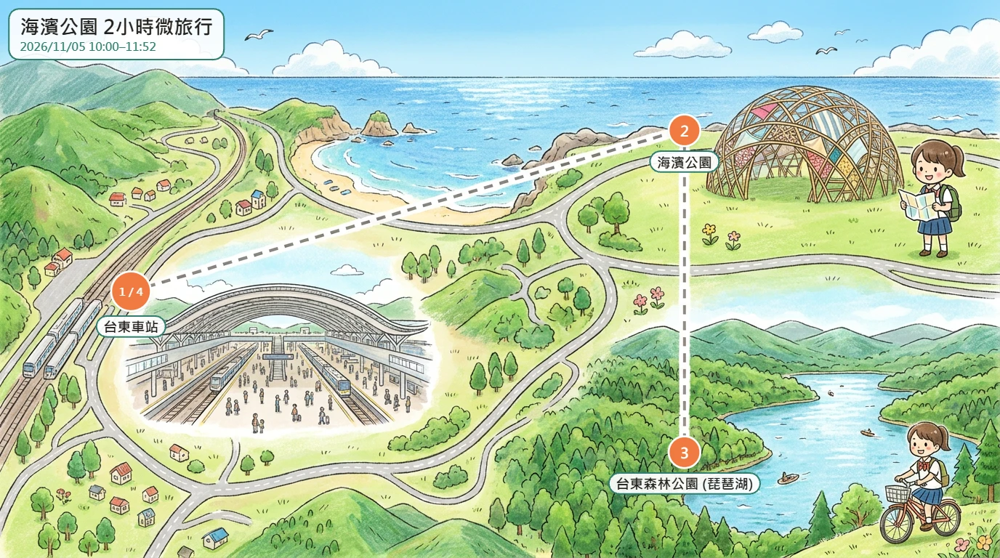
依路線順序排好每一站的位置
Gemini 畫出不含文字的手繪俯瞰圖
避免 AI 寫錯字或畫出行程外的店
看圖找出每一站的點擊範圍
點站看營業時間、導航；進行中小點沿路線前進
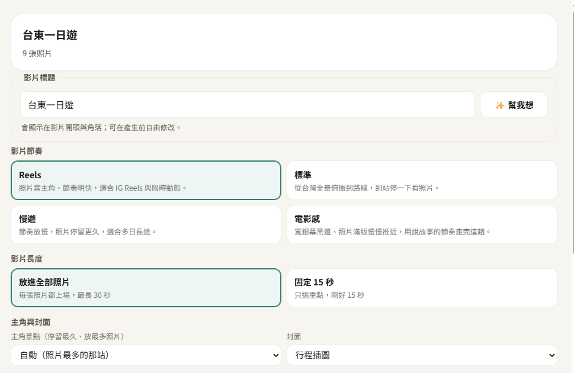
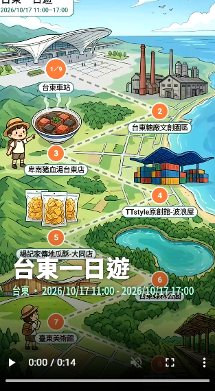
依景點順序、交通工具與旅程數據自動生成；有打卡照片的景點會在到站時插入。
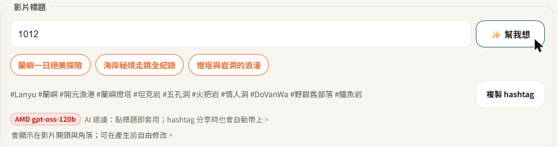
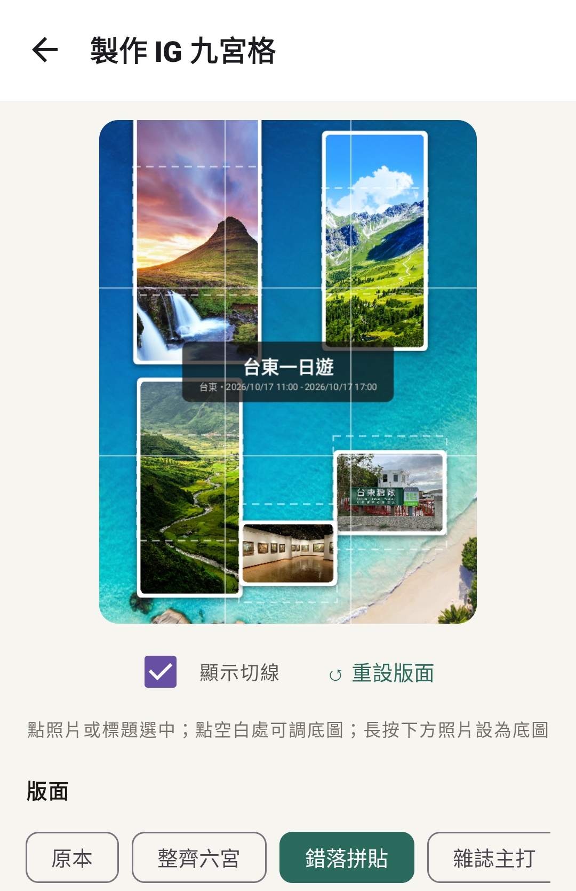
把旅程照片排成一張大圖，切成九張依序發到 IG，個人主頁就拼出完整畫面。
3240×4320 的大圖一次產生約需 56 MB，低階手機會當機；改為一次只畫一格 1080×1440，並以 overscan 消除接縫。
熱門景點不好停車、山區與海岸常沒訊號，這三個工具補上行程表之外的最後一哩。
網頁與 App 讀寫 Firestore 上同一份行程文件：在電腦上排好的行程，出門後直接用手機接著走；旅伴的每一個動作，所有人的畫面都即時更新。
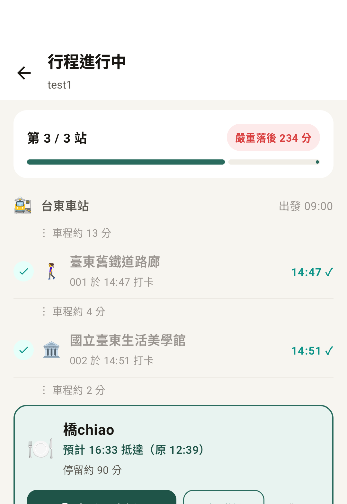
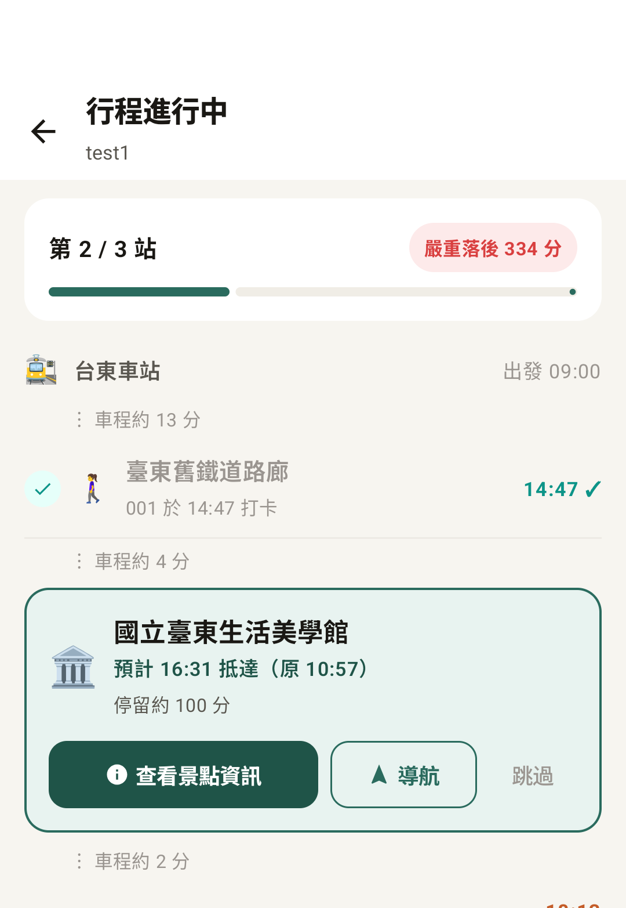
AI 負責選、程式負責算：一日遊由 AMD gpt-oss-120b 代理人呼叫工具，邊查天氣、景點、餐廳邊挑選；順序與時間由程式依真實車程與營業時間排定，草稿不合規就退回 AI 修改。
測試時，只在週三到週六營業的臺東觀光夜市被排在週一中午。現在程式依每一站實際的日期檢查營業時間。
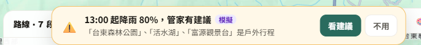
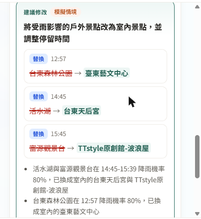
① 主動提醒上方提示列：系統偵測到 13:00 起降雨 80%
② 按「看建議」AMD 代理人 3.1 秒提出方案：3 個戶外站換成室內景點，並附上原因
每分鐘檢查降雨、落後與公休（程式判斷，不耗 AI），也可直接說「好累」
每站如何調整、費用差異，並先通過驗證；實測 3.1 秒
確認後才寫入，並同步給所有旅伴